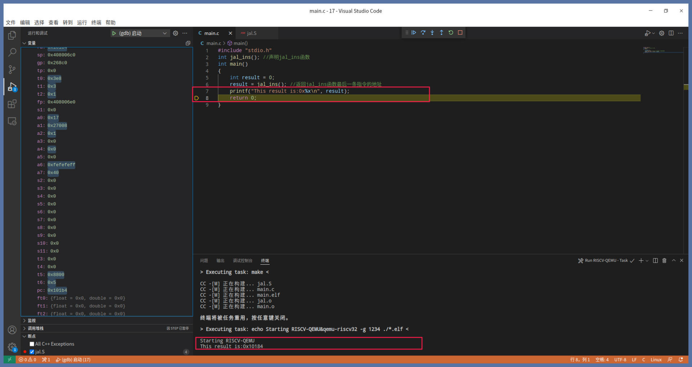
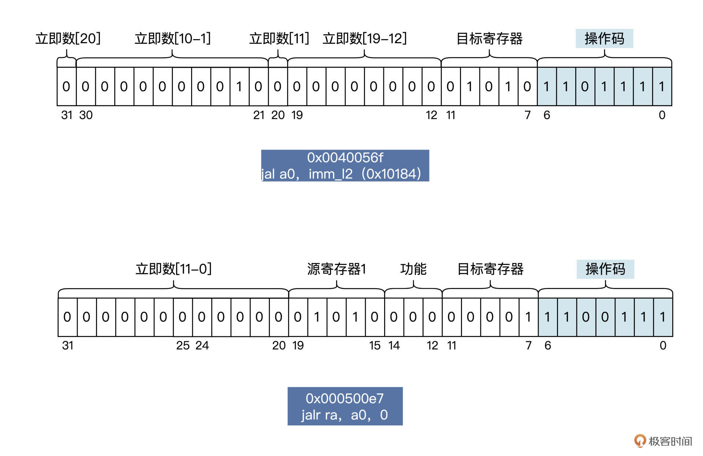

- 00 开篇词 练好基本功，优秀工程师成长第一步.md
- 01 CISC & RISC：从何而来，何至于此.md
- 02 RISC特性与发展：RISC-V凭什么成为“半导体行业的Linux”？.md
- 03 硬件语言筑基（一）：从硬件语言开启手写CPU之旅.md
- 04 硬件语言筑基（二）_ 代码是怎么生成具体电路的？.md
- 05 指令架构：RISC-V在CPU设计上到底有哪些优势？.md
- 06 手写CPU（一）：迷你CPU架构设计与取指令实现.md
- 07 手写CPU（二）：如何实现指令译码模块？.md
- 08 手写CPU（三）：如何实现指令执行模块？.md
- 09 手写CPU（四）：如何实现CPU流水线的访存阶段？.md
- 10 手写CPU（五）：CPU流水线的写回模块如何实现？.md
- 11 手写CPU（六）：如何让我们的CPU跑起来？.md
- 12 QEMU：支持RISC-V的QEMU如何构建？.md
- 13 小试牛刀：跑通RISC-V平台的Hello World程序.md
- 14 走进C语言：高级语言怎样抽象执行逻辑？.md
- 15 C与汇编：揭秘C语言编译器的“搬砖”日常.md
- 16 RISC-V指令精讲（一）：算术指令实现与调试.md
- 17 RISC-V指令精讲（二）：算术指令实现与调试.md
- 18 RISC-V指令精讲（三）：跳转指令实现与调试.md
- 19 RISC-V指令精讲（四）：跳转指令实现与调试.md
- 20 RISC-V指令精讲（五）：原子指令实现与调试.md
- 21 RISC-V指令精讲（六）：加载指令实现与调试.md
- 22 RISC-V指令精讲（七）：访存指令实现与调试.md
- 23 内存地址空间：程序中地址的三种产生方式.md
- 24 虚实结合：虚拟内存和物理内存.md
- 25 堆&栈：堆与栈的区别和应用.md
- 26 延迟分配：提高内存利用率的三种机制.md
- 27 应用内存管理：Linux的应用与内存管理.md
- 28 进程调度：应用为什么能并行执行？.md
- 29 应用间通信（一）：详解Linux进程IPC.md
- 30 应用间通信（二）：详解Linux进程IPC.md
- 31 外设通信：IO Cache与IO调度.md
- 32 IO管理：Linux如何管理多个外设？.md
- 33 lotop与lostat命令：聊聊命令背后的故事与工作原理.md
- 34 文件仓库：初识文件与文件系统.md
- 35 Linux文件系统（一）：Linux如何存放文件？.md
- 36 Linux文件系统（二）：Linux如何存放文件？.md
- 37 浏览器原理（一）：浏览器为什么要用多进程模型？.md
- 38 浏览器原理（二）：浏览器进程通信与网络渲染详解.md
- 39 源码解读：V8 执行 JS 代码的全过程.md
- 40 内功心法（一）：内核和后端通用的设计思想有哪些？.md
- 41 内功心法（二）：内核和后端通用的设计思想有哪些？.md
- 42 性能调优：性能调优工具eBPF和调优方法.md
- 先睹为快：迷你CPU项目效果演示.md
- 加餐01 云计算基础：自己动手搭建一款IAAS虚拟化平台.md
- 加餐02 学习攻略（一）：大数据&云计算，究竟怎么学？.md
- 加餐03 学习攻略（二）：大数据&云计算，究竟怎么学？.md
- 加餐04 谈谈容器云与和CaaS平台.md
- 加餐05 分布式微服务与智能SaaS.md
- 国庆策划01 知识挑战赛：检验一下学习成果吧！.md
- 国庆策划02 来自课代表的学习锦囊.md
- 国庆策划03 揭秘代码优化操作和栈保护机制.md
- 温故知新 思考题参考答案（一）.md
- 用户故事 我是怎样学习Verilog的？.md
- 结束语 心若有所向往，何惧道阻且长.md
18 RISC-V指令精讲（三）：跳转指令实现与调试
你好，我是LMOS。
在[第五节课]，我们曾经提到RV32I有两种跳转指令，即无条件跳转指令和有条件的跳转指令。
不过，前面我们只是简单了解了跳转指令长什么样，并没有深入讲解。接下来的两节课，我们就好好研究一下跳转指令的原理，挨个指令做调试。
这节课我们从源头说起，弄明白为什么需要有跳转指令存在，然后再熟悉一下无条件跳转指令。至于有条件跳转指令，我们放在下节课继续学习。这节课代码，你可以从这里下载。
为什么要有跳转指令
我们不妨回忆一下：C语言中if、for、goto等流程控制语句都是如何实现的？还有C语言的函数是如何调用和返回的？
通过前面的学习，我们了解到CPU执行指令是由PC寄存器指向的。每次执行完指令，CPU的PC寄存器就会自动增加一条指令大小的数值，使之指向下一条指令，如此循环，这就导致CPU只能在PC寄存器的引导下顺序地执行指令，而C语言函数就是一条条指令组成的。显然，只靠这样的机制，C语言无法实现流程控制和函数的调用与返回。
如果现在有一种机制，它能够修改CPU里PC寄存器的值，或者根据特定的条件来修改CPU的PC寄存器的值，让PC寄存器能指向特定的内存地址，读取里面的指令并运行。这样，上述问题就会迎刃而解了。
让我用一段C语言代码为例，给你分解一下这个原理，如下所示：
int add()
{
int sum = 0;
for(int i = 0; i < 100; i++)
sum++;
return sum;
}
上述代码中，for函数包含了条件流程控制和循环流程控制。在编译过程中，C语言编译器会将它拆分为三段，伪代码如下所示：
add:
int sum = 0;
int i = 0;
label1:
i < 100 = false goto lable2
sum++;
i++;
goto label1
lable2:
return sum;
以上伪代码中的goto用来修改CPU的PC寄存器的值，使之指向lable1或者lable2，这样CPU才能执行不同的代码段，从而实现流程控制。这里的goto语句就对应着后面要讲的跳转指令。
说到这里，如果你能再次想起图灵机的读头在那条无限的纸带上跳来跳去的情景，就说明你已经深刻理解了代码的执行原理。

RISC-V的跳转指令格式
前面我们说了，CPU必须依赖某个机制修改PC寄存器的值，让程序能够跳转执行，达到程序流程控制的目的。
这个机制离不开CPU提供的跳转指令，只要执行跳转指令就能修改PC寄存器了。在研究无条件跳转指令之前，我们先来看看RISC-V的跳转指令格式，它对应的汇编语句格式如下：
指令助记符 目标寄存器，源操作数1，源操作数2
对于无条件跳转指令来说，指令助记符可以是jal和jalr，目标寄存器可以是任何通用寄存器，而源操作数1可以是任何通用寄存器，源操作数2可以是任何通用寄存器和立即数。
为什么是目标寄存器而不是PC寄存器呢？继续往下看，我会带你找到答案。
无条件跳转指令：jal指令
我们先来看看jal指令，这是一条无条件的跳转并链接的指令。它的汇编代码书写形式如下：
jal rd，imm
#jal 无条件的跳转并链接的指令
#rd 目标寄存器
#imm 立即数
上述代码中，rd可以是任何通用寄存器。立即数imm为20位二进制数据。有的文档里会把imm称为偏移，为了课程前后文的一致性，我们继续沿用立即数的叫法。
jal完成的操作用伪代码描述如下：
rd = pc + 4；
pc = pc + 符号扩展（imm << 1）
对照代码不难发现，jal指令首先把pc+4，即下一条指令地址送给了rd，然后把PC寄存器中的32位无符号数据加上imm<<1，并且进行符号位扩展（因为指令总是2或者4字节地址对齐的，所以最低位永远为0），再送给PC寄存器。这样就实现了程序的跳转。
接下来，我们一起写代码验证一下。
为了方便调试，我们的代码组织结构是这样的：写一个main.c文件，在里面写上main函数，因为这是链接器所需要的。然后我们需要再写一个jal.S文件，用汇编在里面写上jal_ins函数。
类似的操作前面两节课反复试验过，就不过多重复了。代码如下所示：
.text
.global jal_ins
jal_ins:
jal a0，imm_l1 #a0=add x0，x0，x0的地址，跳转到imm_l1地址处开始运行
add x0，x0，x0 #相当于nop，什么也不做
add x0，x0，x0
imm_l1:
jal a0，imm_l2 #a0=imm_l2的地址，跳转到imm_l2地址处开始运行
imm_l2:
jr ra #函数返回
我已经把jal_ins函数为你写好了。第一条指令跳转到imm_l1地址处开始运行，a0寄存器保存下一条指令的地址，即add x0，x0，x0的地址。
这条指令没什么实际的实现，x0是个只读寄存器，始终返回0。imm_l1地址处又是一条跳转指令，跳转到jr ra指令地址，即imm_l2处开始运行。a0等于imm_l2的地址，也会作为函数的返回值返回。
你可以用VSCode打开工程目录，按下“F5”键调试一下。首先，我们把断点停在jal a0，imm_l1 指令处，效果如下所示：

上图中的状态是执行jal a0，imm_l1指令之前，pc寄存器指向0x10174地址，这个地址对应的正是这条jal a0， imm_l1指令。
我们一旦单步调试，程序代码就会跳到jal a0，imm_l2 指令处，pc + 12 等于0x10180，a0等于0x10178，状态如下所示：

果不其然，a0等于0x10178，而pc等于0x10180，正是jal a0，imm_l2指令。
我们继续做单步调试，程序代码会跳到jr ra 指令处，pc + 4 等于0x10184，a0也会等于0x10184，存放jr ra 指令的地址，而a0作为函数的返回值进行返回，也就是jal_ins函数最后一条指令的地址。
我们再次进行单步调试，程序将会回到main函数中，并打印出返回值，如下所示：

可以看到，上图中输出的结果确实是符合预期的，这说明jal指令的功能确实跟我们前面描述的一致，能够无条件跳转并链接。
无条件跳转指令：jalr指令
让我们加把劲！在jal.S文件中再写一个函数——jalr_ins函数。在这个函数中，我们用jalr指令实现函数调用，具体就是给jalr_ins函数传递一个函数指针，通过这个函数指针调用这个函数。
写代码之前，我们先来了解一下jalr指令，它同样是一条无条件的跳转并链接的指令。jalr指令与jal指令字面上的不同点，无非就是多了一个字母“r”，这个“r”表示寄存器，相当于jal指令的寄存器版本，能够通过寄存器传递跳转地址。
jalr的汇编代码书写形式如下：
jalr rd，rs1，imm
#jalr 无条件的跳转并链接的指令
#rd 目标寄存器
#rs 源寄存器1
#imm 立即数
上述代码中rd、rs1可以是任何通用寄存器，立即数imm为12位二进制数据。jalr完成的操作用伪代码描述如下：
rd = pc + 4；
pc = (rs1 + 符号扩展(imm << 1)) & 0xfffffffe
对比之后我们不难发现，以上代码中和jal相同的地方是，开始第一步由jalr指令把pc+4，即下一条指令地址送给rd。
而不同之处是，jalr指令的下一步操作会让rs1中的32位无符号数据加上imm<<1，并且进行符号位扩展后与上0xfffffffe，这也是为了指令要以2字节或者4字节地址对齐，所以最低位必须为0，形成一个地址值。完成以上过程后，这个地址值会送给pc，从而实现程序的跳转。
下面我们一起写代码验证一下。
.global jalr_ins
jalr_ins:
addi sp，sp，-16 #在栈中分配16字节的空间
sw ra，0(sp) #保存ra寄存器到栈中
jalr ra，a0，0 #ra = lw ra，0(sp)指令的地址，跳转到a0+0的地址处开始运行
lw ra，0(sp) #从栈中恢复ra寄存器
addi sp，sp，16 #回收栈中分配的16字节的空间
jr ra #函数返回
这段代码3~4行和6~7行代码的作用是，在栈中分配和回收内存空间的指令，用于保存和恢复ra寄存器的内容。
因为在第5行代码中，跳转别的代码中运行，正是用ra寄存器来保存地址的，然而在跳转到jalr_ins函数处运行的时候，同样是使用ra寄存器保存返回地址的，如果不保存和恢复ra寄存器，jalr_ins函数将无法返回。
现在我们调试一下，如下所示：

上图中是执行jalr ra，a0，0指令之前的状态，a0寄存器中的值是0x101a0，这正是testjalr函数的地址。这条指令能完成类似函数调用的功能，我们一旦单步调试，程序就会跳到testjalr函数内部开始运行，状态如下所示：

由上图可知，jalr_ins函数确实调用了testjalr函数，也打印出了testjalr的地址。下一步将要执行testjalr函数的返回语句，会返回jalr_ins函数的地址。
我们继续做单步调试，看看能不能返回到jalr_ins函数中，如下所示：

调试结果验证了确实如此，代码流程再次回到了jalr_ins函数中。在jalr_ins函数中，我们恢复了之前的ra寄存器，a0寄存器中保存着testjalr函数的返回值，即jalr_ins函数的地址。
继续单步调试，代码流程就会回到main函数。

如上图所示，main函数中继续打印出了jalr_ins函数的地址，这个结果是正确的，代码流程也符合预期。
通过调试，我们已经了解了jal、jalr指令的功能细节。
下面，我们来看看jal_ins函数和jalr_ins函数的二进制数据。其实我们调试bug或者做逆向工程，很多时候都需要研究机器码，正好借这次研究指令的机会，我们一起练习一下怎么分析。
我们打开终端，切换到工程目录下，输入命令：riscv64-unknown-elf-objdump -d ./main.elf > ./main.ins，就会得到main.elf的反汇编数据文件main.ins。打开这个文件，就会看到jal_ins函数和jalr_ins函数的二进制数据，我的操作截图如下所示：
上图中的反汇编代码中使用了一些伪指令，比如ret的机器码是0x00008067，它就是jr ra，但是jr ra也是伪指令，实际的指令是jalr x0，ra，0指令，伪指令是为了方便汇编编程人员才使用的。
我们再来说说上图中的机器码，0x0040056f为jal a0，imm_l2（0x10184），0x000500e7为jalr ra，a0，0，图里的jalr a0就是jalr ra，a0，0 。
我们继续拆分jal指令和jalr指令的各位段的数据，看看它们具体是如何编码的。你不妨结合后面的示意图来理解：

jal指令与jalr指令是靠操作码区分的。jal指令的立即数部分编码非常乱，这部分跟芯片设计有关，就不深入讨论了，其数据正常组合起来是0b00000000000000000010，这个二进制数据左移1位等于十六进制数据0x4。为什么是这样呢？
回到前面看看jal指令的操作，你就明白了：pc+4正好是imm_l2的地址即0x10184，而jalr指令编码非常简单，12位立即数为0，源寄存器是a0，目标寄存器是ra，x1寄存器的编码就是1。
到这里，jal指令与jalr指令我们就讲完了。它们都是无条件跳转指令，并且都可以保存跳转指令的下一条指令的地址，用于返回。但jal指令与jalr指令跳转的地址大小范围有差别，这主要取决于它们地址数据的编码形式和计算方式。jal指令是用当前pc值加上20位立即数，jalr指令是通用寄存器加上11位立即数。
重点回顾
说到这里，这节课的内容就告一段落了，我来给你做个总结。
因为不管什么程序都不能永无止境地顺序运行下去，所以需要控制程序流程，对数据进行比较判断，根据结果执行相应的动作。这就需要程序能够跳转，所以，一套指令集里就必须要有跳转指令来支持。
跳转指令又分成有条件跳转指令和无条件跳转指令。我们按照先易后难的顺序，这节课重点研究了无条件的跳转指令，一共是两条指令，即jal指令和jalr指令。它们在跳转的同时还能保存下一条指令的地址，这类指令常用来实现高级语言（如C语言）里的函数调用。
这节课的要点我给你准备了导图，你可以做个参考。调试验证环节，我建议你自己课后动手多多练习，加深印象。

下节课我们继续研究有条件跳转指令，敬请期待。
思考题
既然已经有jal指令了，为什么还需要jalr指令呢？
期待你在留言区记录收获或疑问，认真思考和主动练习都能让你加深印象。如果感觉这节课还不错，也推荐你把这节课分享给更多朋友。
© 2019 - 2023 Liangliang Lee. Powered by Vert.x and hexo-theme-book.